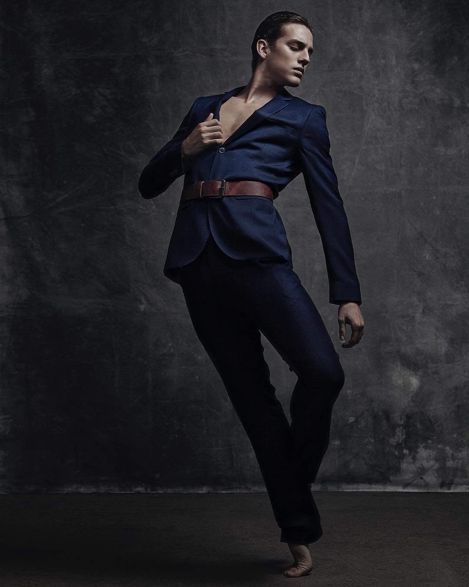

Sobre Sebastián Vinet
Sebastián Vinet nació en Santiago de Chile, donde inició sus estudios en la Escuela de Ballet del Teatro Municipal de Santiago, para luego terminarlos en el Houston Ballet Academy en Estados Unidos bajo la dirección del maestro Claudio Muñoz. Ha pertenecido a compañías como Houston Ballet, San Francisco Ballet, Ballet de Santiago y la Compañía Nacional de Danza en México. Hoy es bailarín invitado internacional,adquiriendo así la oportunidad de trabajar con diversas compañías de dicha disciplina, en importantes galas y eventos de danza.
Durante su carrera ha tenido el privilegio de protagonizar roles principales y solistas de aclamados coreógrafos internacionales como Marcia Haydée, Kenneth Macmillan, William Forsythe, Christopher Wheeldon, Helgi Tomasson, Stanton Welch, Mark Morris, Ben Steveson, John Cranko, Demis Volpi, Marius Petipa, Tim Podesta, George Balanchine y John Neumeier, entre otros, participando a la vez en galas internacionales en Inglaterra, Dinamarca, Hungría, China, Estados Unidos, Canadá, República Dominicana, Rusia, Australia, Japón, Argentina, Indonesia, Etiopía, Brasil, Paraguay, Uruguay, Perú, México y Suiza. En este último país fue uno de los ganadores de la competencia Prix De Lausanne en 2009, y en 2020 fue jurado, convirtiéndose en el más joven y en el primer chileno en tener dicho honor.
Ha recibido otros premios como Jóvenes Líderes 2009, otorgado por El Mercurio, y el premio al “artista chileno” en reconocimiento a su trayectoria y méritos internacionales en la danza, entregado por la Embajada de Chile en Estados Unidos.